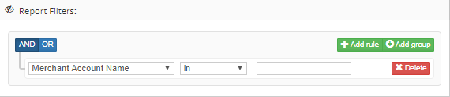
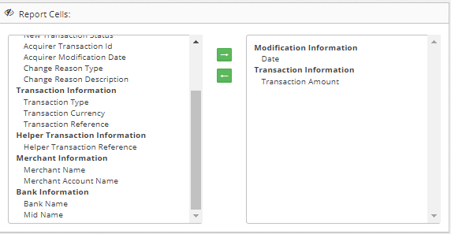
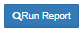
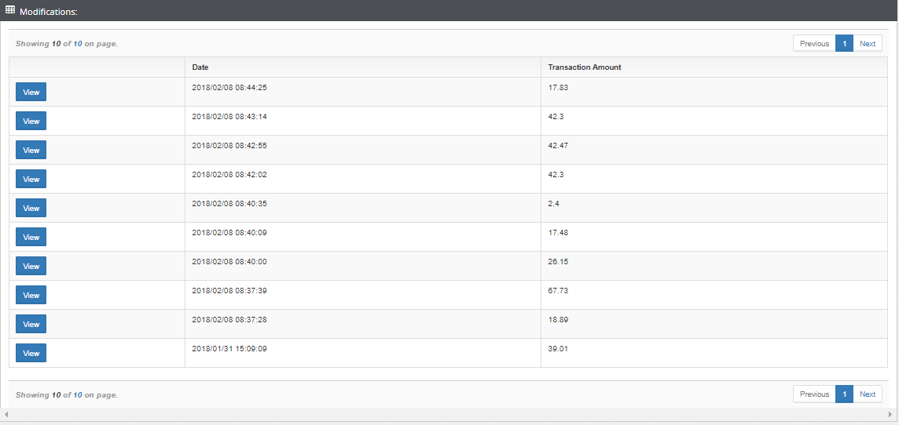
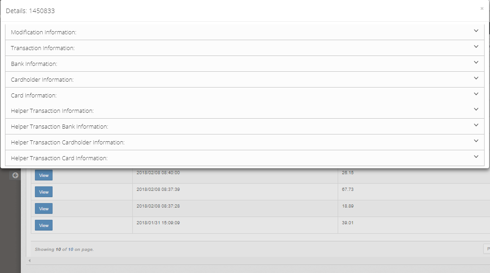
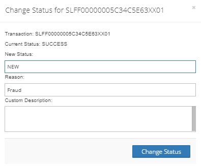
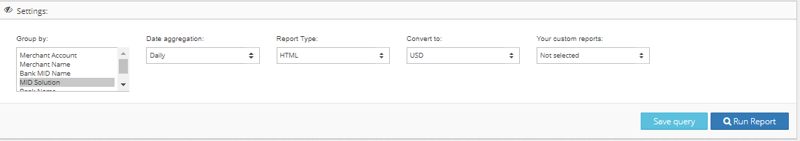

Section: Home Report FRS Modification
Modification report display change of transactions
Set up Report filters
Screenshot from Admin Portal :

Choose report cells to display
Screenshot from Admin Portal :

Click on the button to run report 

View on modification details

Section: Home Report FRS Reconciliation
Remember:
Be careful with status changes
Modification report display change of transactions
Set up Report filters
Screenshot from Admin Portal :
Choose report cells to display
Screenshot from Admin Portal :
Click on the button to run report
Choose status and reason of change transaction status
Screenshot from Admin Portal :

Section: Home Report FRS Rolling Reserve
Description:
Reserve amount to merchant
Rolling Reserve have filters and settedings how other FRS-reports. Simple of result below:
| Wallet Name | Rolling Reserve | Rolling Reserve Released |
|---|---|---|
| Computop | 301.431 | 0 |
| Maxpay Limited | -423.823 | 1499 |
Section: Home Report FRS Balance
Description:
Merchant balance report
Apart from report filter and report cells you can set up settedings below:

Example of searching result
| Billing Date | Wallet Name | Bank Name | Merchant Name | Rolling Reserve |
|---|---|---|---|---|
| 2018/01/01 | Maxpay Limited | BillAsia | Together Network Holdings | 1026 |
| 2018/01/01 | Maxpay Limited | BillAsia | Together Network Holdings | 2.01 |
| 2018/01/01 | Maxpay Limited | BillAsia | Together Network Holdings | 325.3 |
Details:
Rolling Reserve has own report